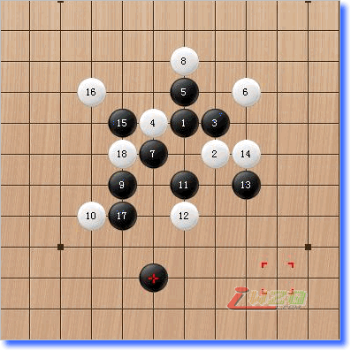

掌棋盟Jay学棋日记
#1 掌棋盟Jay学棋日记 作者：有志青年 发表时间：2008-6-17 8:03:40
原文地址：http://www.zhangqimeng.com/viewthread.php?tid=1204&extra=&page=1
前言
下五子棋是02，03年了，那个时候的联众就象我的家，每天泡在上面十几个小时能不下来，进去就象回家了，好多人好热闹啊！
混得时间长了，没有功劳也有苦劳，没有苦劳也有疲劳，总归是泡那么长时间来着，三十几个号，好歹也有个几万盘了，好好歹歹混到无禁三段，当然还是无名小卒一个，当时就是觉得五子棋下得快，适合当代人生活节奏快，一局棋不用很长时间就能结束了，也适合我的脾气，后来混了本书，叫五子棋必胜法，是日本人写的，看完了后又提高了一些，原来谱是真有用的，但是还是不太习惯有谱的，还是喜欢自己下，靠自己的水平去下。04年开始换了工作，就没有时间去下棋了，挣钱么，说白了，这社会最要紧的事，还是要生存。
最近比较闲，闲来无事又去联众看看五子棋，谁知道烟吹人散，没啥人了，真是晕。
到QQ里一看，好热闹，玩棋的热情又上来了，咱RP还不错，交朋友快，没多久接触了有禁，就想着咱无禁还可以，到有禁么最多降一档，谁知道到三手一里玩了一个星期只赢了几局，郁闷，我是个不服输的人，对自己的要求就是玩啥象啥，还就不走了，但是不行，输多赢无，才知道自己是井底之蛙，努力要学习，到处拜师没人收。。。再次郁闷一记。
前两天刚找到一个愿意教我的人，没经过人家同意，不方便写师父的名字，好，从此开始学棋之路。。。。
07.12.20
老师教课之前先测试一下，是啊，总得看看水平吧然后再给一个教课的方法，先来两局吧。。
两局瑞星下完，老师给了个结论，还行。。
下棋输赢这些都是次要的，关键是老师的棋评给了我很多提示
第一，从他的棋评里我的进攻，防守，中盘，做棋都存在着有问题，慢慢来吧！进攻缺乏隐蔽性，就是不够深入思考，防守不够全面性，顾前不顾后，当然进攻和防守是相连的，进攻到别人不能防守，进攻的同时不忘记防守，做棋缺连接性，总得来说深度和广度都不够。
这是从棋面上的理解，不过倒也让我想到了一些事情，有个朋友说棋如人生，原来我还只体会一些，现在就更深刻了一些，现在的人比较浮躁，下棋的时候急于求成，当然进攻犀利是另外一回事，这个也能和棋面上联系起来，进攻不成赶快防守，为时已晚，这和人性有关系，有些人比较稳妥，那就会比较注重防守，不轻易的去做不必要的事情，一旦有把握了才会反击进攻，所以下棋磨人心也就是这个样子吧，一点点小小的想法。
第二，所有棋面上的东西都可以反应出来思路，下棋么，玩儿得就是套，谁把谁套里面了就是谁比较厉害些，我下棋比较快，当然输得也比较快，师父说：能把速度转化为深度和广度就更好了。在下一颗子的时候，你能不能把横竖斜三条线上的点都照顾到呢，我做不到，我只看我这个角上的东西，这个就是大局观的问题了。慢慢来练吧
第三，下完棋后有没有复盘来看，我平时下完就下完了，除非输得比较惨，或者重复输的棋才会复盘看，每盘棋如果都找出好手与差手来，那这样会长进的。我的想法，如果以后遇到两局相同的赢或者相同的输，那么这个局就是应该注意的棋了。
我的文笔不好，不能妙笔生花，大家随便看看，我下了一手随手棋，写得一手随手日记，想到哪里写到哪里，但是这是我心里面的真实反映。。。
07.12.21
今天上了头一堂课，老师说以我的基础可以从中级开始学，我选了个云雨开始，以前也就是比较喜欢这个局，但是没有深入下过，也从来不开这个局。
先开始学云月一打，当然老师是黑我是白，云月一打是必胜，我以前也看过云月一打的谱，所以讲课的时候呢，我的思路还是可以提前老师讲的一些东西，谱是死的，人是活的，以前看谱没人讲，就知道这样下那样下，白走哪里黑防哪里，如此如此，不过今天听老师一讲，原来做棋可以如此奇妙，呵呵，当然，那些简单的东西在高手眼里是不值得一提的，但是到我这里好象看到了一片新天地，要好好理解一下。做棋这条思路不是一天两天就能学会的，整个的一个棋局里做棋也不可能是一步两步，如何承上启下，如何沟通连贯，妙手如何生花，那不是件容易的事情啊。
总之，做棋就是在短期连续进攻不成的话，转换
#2 Re:掌棋盟Jay学棋日记 作者：有志青年 发表时间：2008-6-17 8:06:06
12。27学棋日记
今天学的是云月的白4第三强防的后半段，以我的眼光来看，MS攻不出来的棋却被师父简单解决。。。也学到点东西，师父的攻并不是强攻，不是硬攻，总是能做出来妙棋。
其实今天的棋也通人生，一些做棋的理念是给对手留一手，让他来防，根据防的不同做不同的战术方案，下棋和做人一样，太霸道可能在早期有点得势，但是如果攻不下来，留下得可都是对手的棋，我个人感觉，我下棋就是老是强调攻，攻，攻，但是遇见真正的高手，基本上都没有成功的，呵呵，做人也要留有余地，一样的能在社会上做事。遇见难下的棋，不确定的话就不要太强攻，毕竟对弈就是要赢的，如果强攻不下就认输的话，这叫随手棋，对爱好的不认真，就是对自己不负责。
还有，我突然发现自己不会下棋了，学习学习应该学得更好啊，可是我这几天不管是自己练还是跟别人下，突然就水平差了好多，下棋完全没有套路，按照老师说的，分隔阻断，斜线直线算清楚，算得自己头大，可是这棋下出来怎么就是那回事呢，下了这个忘了那个，按五子棋我常跟人家说就是把五个不相干的子联在一起，可是我真的下了几个不相干的子，怎么都联不到一起来，胸闷啊胸闷啊，以前不学谱还没有这样下，还能按照自己的思路来二把，这一学谱怎么变成这样了，师父说，我要脱壳了，要化蛹了。。。。呵呵，希望如此吧
我玩轮滑还是有点心得的，有些家伙自觉得滑得很好，可是真正遇见了高手指点后突然觉得不会滑了，怎么滑这个动作怎么别扭，也是要经过一段时期的。。
慢慢来吧，心得是一点点的积累出来的。。。
2008。1。3云月第二强打点
新年第一节课，过得有点迷糊了，3号是周四，过不来劲
今天学的云月的第二强防点的练习，这个局是我下得比较多的，因为别人下松月，银月我都把它变成这个形状，所以对这个防点多少也有点了解，看书比较多的练这个局，老师讲得比较轻松，我下得也比较轻松
因为云月的第二强我下得比较多，银月，松月，云雨月都可以相通，所以，这个形是比较需要练习的，也是要下得多来练习的，但是，稍微差一个子就变得不认识了，经常都是想当然的走，走着走着就走不通了。。。胸闷一记，这就是走随手棋的后果。
虽然我以前也看过这个第二强的谱，但是还不到位，有些棋到我手上还是走不出来的，五子连珠，关键是这个连，谁能连到最高境界，谁就是高手啦。
今天跟师父练棋练着练跑题了，结果变成下一局，老师讲着讲着就魂游外舍了，结果还被我赢了一局，哈哈，侥幸侥幸，下棋的结果，让我了解到，其实跟高手下不用先吓着自己，我跟他说我上次见着顾炜，虽然顾老师挺和气，但是还是怕怕，连说跟他下一盘的勇气都没有，如果真的实战，不战而败了，呵呵。
下棋要静心，我的心一直不静，所以棋也长进不了，这几次上课的结果，我的棋慢下来了，开始想了，因为遇见真正的高手，随便下下是没有办法去找得下棋的乐趣，跟高手下是一种乐趣，动脑子 的游戏是要动脑子才会有乐趣的。
跟顾炜顾老师下棋
早就听说顾老师常在上海热线里下棋，正好我在上游里也有帐号，等了四天，每天都是我下线后他上线，他是夜猫子，上得太晚，老是遇不上，昨天终于让我撞到了，呵呵，抓着下棋呗。
顾老师叫此剑西来无对手，名字很嚣张，不过人倒是很低调，也很和气，很象棋魂里的日本棋手一样，开始下前先说请指教，下完后说谢谢指教。
开两盘瑞星，但是都是以白四明星防法，都走的不是一打，反正是上来我就在势气上输了半头，我不敢进攻，因为早就听说顾老师很阴，计算又好，我死防，防不住，他的棋和我平时下得不太一样，变招突然，无伤说我对不认识的局下不过，而且攻防转换考虑过少，现在还是这个毛病，咋改咧。我跟顾老师下，我给我自己下的目标是撑到五十手以上，结果两局都没撑到四十手，他开黑我只撑到三十手，呵呵，努力努力。
小小的总结一下，顾老师下棋一句话也不说，我却废话不断，跟这个聊聊，跟那个聊聊，很不认真 ，该打，其实我跟我实力差不多的棋手下棋的时候也是一句也不说，跟实力差太多的反而不认真。
看顾老师的棋，虽然我算不到，但是哪个方向我还是能判断的，但是每次都是在他一变招后就会形成连攻，基本上就没戏了。对
#3 Re:Re:掌棋盟Jay学棋日记 作者：有志青年 发表时间：2008-6-17 8:09:56
今天又学会了一句话，叫在防守中积蓄力量。。。。
本来9指教我的时候，也说常常说防守反击。因为进攻是比较累的事情，常常要算这算那，算通这路算那路，死脑细胞大大的，防守就相对好一些了，可以少死些脑细胞，我当时也没怎么听进去，觉得有攻有攻呗，攻不下再说呗。
前几天在上游看一个家伙下，他是绝对防守型的，但不是纯防守的，在他的防守下，我没看几个人能攻到头的，但是一旦他的棋有了优势以后，进入反攻，他也是很强的，不管是黑棋还是白棋，都是先行守住，哪怕给对手攻一会，胜率很高，而且很沉得住性子，后来才知道，是上海的一个职业六段，叫啥来着我给忘记了。但是他的棋，如果在实战中，首先是要保持不败，然后再追胜。也许这才是实战中需要的一种类型。
这几天我试了一下防守反击型的，还挺累的，可能我是沉不下心来的人，盘面上棋越来越多，我会越来越没信心的，可能一种棋风适合一种人吧，但是棋下得比较轻松，全职防守果然比进攻要轻松多了，胜的盘数也多些了，最好是能把这种观念融入到自己的棋风中去，各项都提高，整体实力也就上去了。再不写点啥我就要郁闷死了。。。。
我的第一次比赛就这样荒废了。。。真是郁闷至极。。。
我一向认为胜亦如何，败亦如何。。。所以对成败看得比较淡，比赛之前我也准备好了六战全败的结果，我个人的心理，只是享受着五子棋的过程，思考的快乐是不能代替的，胜负只是一个结果，胜负又能如何，借用三国的话，输赢成败转头空。。。。
但是，我一直信奉着这句话，男人最帅的时候就是他认真做一件事的时候，所以我在做我喜欢做的事的时候总是很认真的，轮滑也好，五子棋也好，最讨厌的事情就是有人打扰。。。结果，我的第一次比赛就这样被某些人要睡觉给终止了。。。
比赛对我来说既重要又不重要，本身来说，比赛只是换换环境下棋么，何况也不是什么重要赛事，我个人又对输赢不是很在乎，所以对我来说并不重要，但是，以我对五子棋的热衷，我又觉得是一次检验我的时候，何况这也是我的第一次参加，我需要做一件认真的事情，这对我来说又是重要的。。。
就这样被莫名奇妙的搞黄了，算什么吗。。。你可以不了解我，但是不能不了解我的爱好，说句搞笑的话，你可以污辱我，但不要污辱我的五子棋。。。
有些话我也说不了那么透，只是发泻一下心中的郁闷，再不说出来，我会生病的。。。
在这里，我也要向比赛的组委会道歉，也向第三局第五局第六局的对手道歉，我个人的原因，使你们的工作量加大，十分的对不起。。。
在比赛中领悟到的一些事情（一）
参加了第一次比赛，有些感觉的，要说出来的，要不然过后就忘记了。。。
我的第四局对传鹰大哥，差不多这样叫吧，相信传鹰大哥大不了我几岁，因为我也被人称为大叔了。。。在联众时代我就听说过传鹰大哥了，那个时候我不玩禁手，但是人的名，树的影，这个名字一直也就留在我的印象中了。。。
当克鲁通知我第四局对传鹰，先是一怔，哦，传说中的人物，平时在群里也没有见过，肯定下不过他的，然后是一喜，可以和高手下棋是每个学棋的人都想要做的事情，虽然我知道我会输，但是我很认真的对待这局棋，一怔之后便是一喜。。。
我执黑以瑞星开局，传鹰大哥交换，其实以瑞星大定的方式 是我不习惯的，因为我平时下基本都是不赢的，我掌握不住什么时候就防住开局就形成的那个白斜三，所以一般都是下输。。
我喜欢用明星来防，传大哥以一打两打应接，前八手正常，第9手传大哥变招，是一个我没见过的棋形，无伤说我对于没见过的棋形比较手足无措，所以自从他说过我之后，我开妖刀不少，因为全都是我没见过的棋局，以此来提升我的计算力。
传鹰大哥是有年龄的关系还是本身下棋比较多，给我的感觉是防守很稳，属于防守反击型的，按理说，这个明星二打可以连攻的，但是他选择的防守，给我机会，但是我也知道，以我的计算力算不过他，在没有七分以上的把握我也不敢轻举妄动，中间我是有机会的，在黑棋啥都没有的时候，我有两个二，但是我的计算力还是不行，到18手的时候，虽然传鹰大哥还没有一个二，但是我知道我已经输了。。。。因为他可以成棋的地方太多了，但是我只有左上角可能有攻，在防守中积蓄力量，这是我以前写的贴子，这次应用在我的身上了。。。呵呵。。。
很高兴可以和高手对棋，输赢没啥，我还是学到一点点，我从来没指望过我成为什么超强高手，因为没那个天份，我只是沉浸在思考的快乐中。。。。五子棋也许可以成为我到老的一个爱好。。
#4 Re:掌棋盟Jay学棋日记 作者：有志青年 发表时间：2008-6-17 8:13:49
防守中进攻的深度一层理解
最近看了几盘棋，下了几盘棋，对防守中进攻有了深一点的了解。
原来我的理解是防守为主，可以说是消极防守，直到对方攻不出来了，再看白棋，这样的话至少保平，但是有些是攻得出来的棋，或者类似黑石一类的软件，一直攻到你防守出错为止，没有一个人可以说是完全的的最强进攻或者是最强防守，实战更是如此，黑棋主攻，白棋主守，消极防守不行。。。
比赛那二天看了星星对云飞的那盘棋，我记得云飞执黑在上方非常有优势，如果按我理解，看不清的棋我就防守，不是说己落一子，敌增一兵么，但是那天星星的棋就没有那样下，在看似黑棋很强的时候去下一手白棋，这手白棋刚好占到关键点上，黑棋在思考了很长时间后还是来防白棋了，我觉得这里面有两点，第一，星星的计算，理论是建立在强大的计算力基础上的（无伤语），如果没有很强的计算能力，黑棋的优势算不清楚，我相信他也不敢那样做，而且做了一手看起来并不是十分占优的白棋，也许是我算不出来吧，引得黑棋只能防守。第二，心理战，在黑棋算不透自己棋的情况下，白棋的一手看似不是很强的做棋，是防还是进攻，那步棋下了很长时间，心理战也是一个方面吧。
昨天 和统棋无怨下的一盘棋，无怨这哥们防守飘得厉害，一盘疏星，有一手下得很飘，那边没有一个白子，我按原来的思路就贴身防了一下，但是下完了发现那一大块空地上有三个黑子，只有我一个白子，肯定是不成的了，如果一大块地上有三个黑子，只有一个白子，如果拿开局来说，这样黑棋还多了一个子，说啥都是输了，就在那个时候，9指头老师让我悔了一步，在一个我看起来不可能攻得出来的地方竟然杀了出来。这盘棋让我明白到，在不可能防守的情况要积极对攻，要往没有黑棋的地方去杀，最好一个黑子都没有才好呢，要相信自己的力量，不能VCT也要做杀，结果往往出人意料之外的，下次要好好将这个防守和进攻的结合要好好理解一下。。
2008-6-6
好久没来写了
可能是没心情吧。。。。。
刚才听了裁决的一盘棋，又听到了一个以前我没有想过的新东西
我没下过疏星，听到一套下疏星的赢法，突然间觉得又学到了一些
有一个词，搬子，呵呵，也许是自己叫出来的吧，倒是很有意思的叫法
以前下棋，都是看连接连接，如果赢了就是一套杀，如果赢不了，就说不清楚了，第一个，觉得没信心，搞了一套杀赢不了对方，盘面上又出来那么多子，第二个，可能对方的棋就会多出来很多，都不知道要怎么防了才好，会慌。。。。
今天 看到这个局，右边明明没有杀，因为差一个子，要是做这一个子呢，白棋又能堵住，然后讲师在左边狂轰乱炸一通后竟然在这里放一个子，这就是所谓的搬子。用一套杀（能防得到的杀而为了右边的一颗子）做一个子，这种思路可能以前也在不知不觉中用到了，但是没有提升到理论水平 ，今天把这条路理清了。。。
但是为了一颗子而去做一套杀，理论可以理解，但是这种棋路怎么去做呢，没有计算力或者研究后怎么就敢保证可以做到这一颗子，让我联想到我跟国之香和网名不重要两个下的几盘棋，这两个人都属极限进攻，做棋做棋再做棋，跟他们下跟得好累，跟着跟着就输掉了。有时候觉得防得不错的棋，到最后也因为突然多出来一个子而输掉，现在想想，应该就是这个样子杀出来的，以后要多想想，多下下，也体现了一个全局观的练习
刚刚听完有心得，赶紧写下来，要不然睡到明天就想不起来了，呵呵
写得挺乱，请拍砖
2008-6-16
今天遇到一个人，跟我下云月
虽然我是知道他下云月一打的，不过为了复习吧，还是下了
他开7手的时候，我还偷笑了一下，我说这人不按谱来的呀

我还是按照我的八卦，当然我估计是要输的。。。。因为八卦在高手面前是不堪一击的，但是没有想到输得这么快，在他下到13手的时候，我已经觉得我要输掉了，但是我一直找不到那个连接点按我的理解12下方一格应该是连接左右的要点，所以我拼命在这条线上找防守点，当对手下出现在的19点后，我觉得豁然开朗，原来线路是这样的双杀。
晚上我把这局复盘出来，还对这个19手赞不决口，呵呵，可能高手看这个点觉得理所应当，但是对我来说却是一个新的局面，原来还有这样杀的，
#5 Re:掌棋盟Jay学棋日记 作者：五子天下 发表时间：2008-6-18 15:10:49
谢谢你的学棋经历 看了很有体会啊~~~~~~``#6 Re:掌棋盟Jay学棋日记 作者：歇斯底里 发表时间：2008-7-5 10:56:27
我说我咋注册不上，原来被人注册用了，汗一把。。。。#7 Re:掌棋盟Jay学棋日记 作者：唐门小虎 发表时间：2009-9-10 12:56:37
怎么没有了，继续写啊，我当你的日记迷铁杆粉丝#8 Re:掌棋盟Jay学棋日记 作者：岳麓小棋皇 发表时间：2009-9-12 12:14:37
更新啊更新啊!!!!